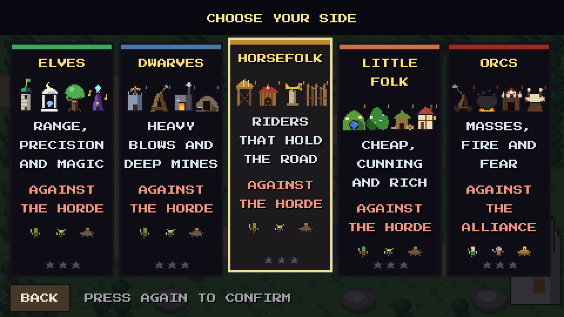
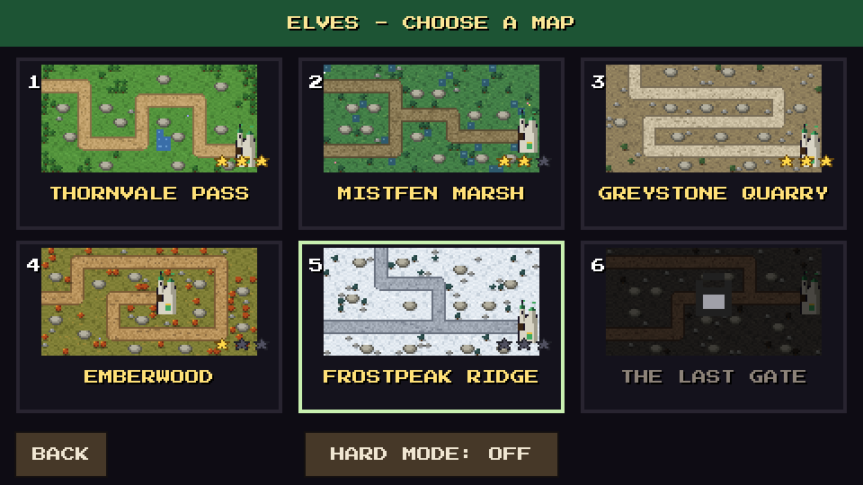
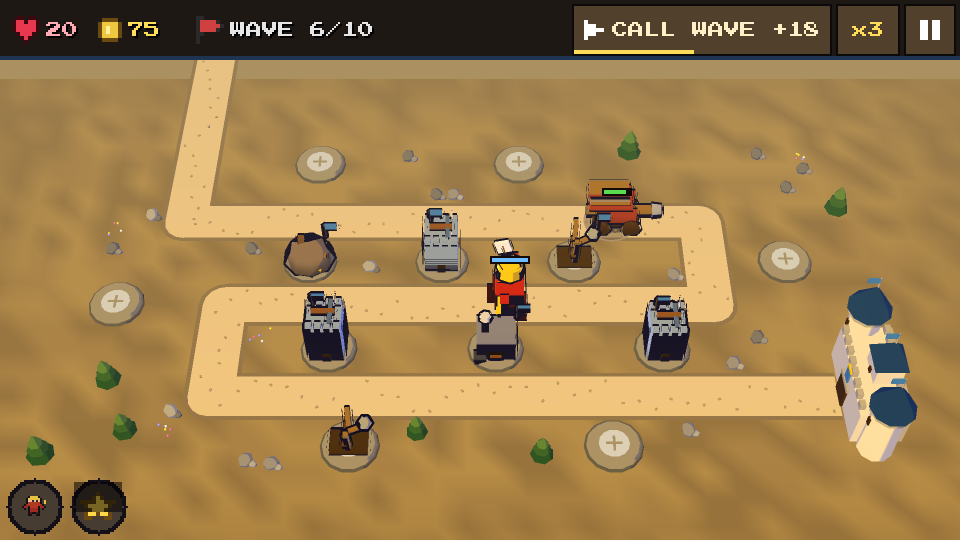
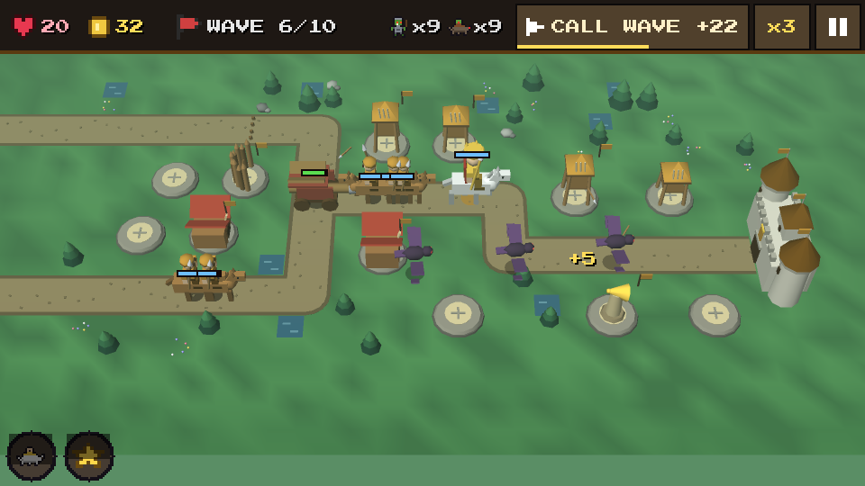
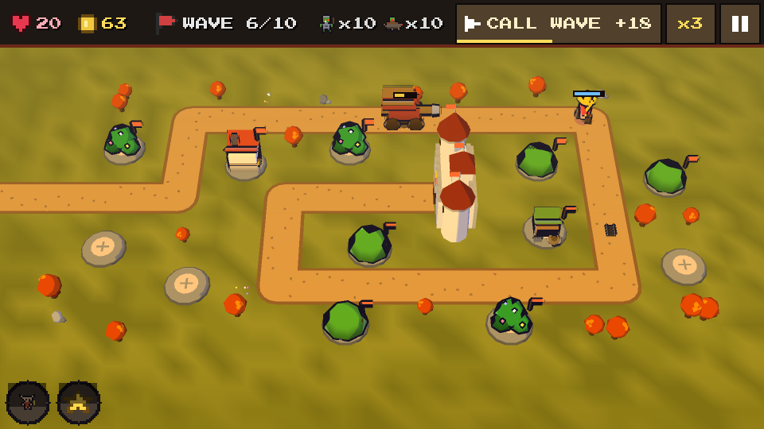
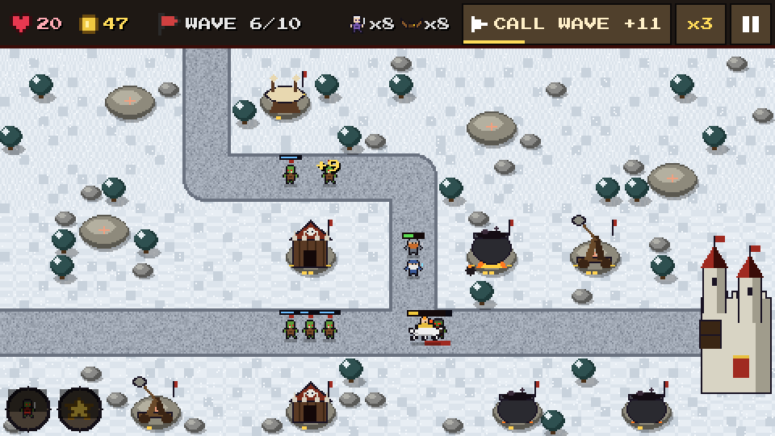
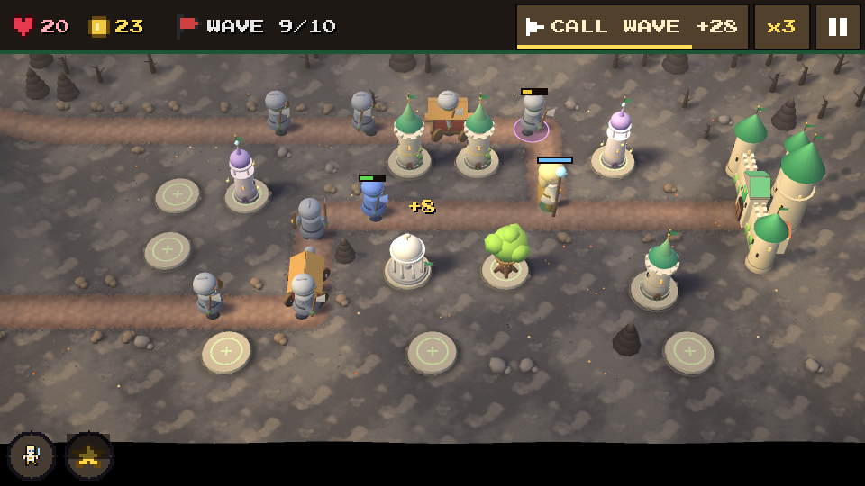

A fantasy tower defense in 3D, in your browser
Enemies follow the road to your bastion. You build on the stone platforms beside it: towers that shoot, soldiers that hold the road, walls, traps, drums and mines. Every wave is announced, every people has an answer to every threat, and none of them is the same. Call the next wave early for bonus gold, speed the game up to x3, and keep the bastion's lives: three stars for a flawless defense.
It runs in the browser on desktop and phone, with mouse, touch, keyboard or gamepad, and it can be installed to play offline.
Choose your people
Each people has four towers, three upgrade levels and two specializations each, its own colours, a hero and a power that you cast where you point. Four of them defend against the orc horde; the orcs defend their own bastion against an alliance of the four free peoples.
Elves
Range, precision and magic. Archer spire, moon sanctuary, wildwood sentinel, songmage. Hero: Aelwen Moonbow.
Dwarves
Heavy blows and deep mines. Heavy crossbow, siege slingshot, runic forge, deep mine. Hero: Borin Stonefist.
Horsefolk
Riders that hold the road. Javelin throwers, stables, war horn, palisade. Hero: Edrith Swiftmane.
Little folk
Cheap, cunning and rich. Slingers, hidden garden, snare traps, cosy inn. Hero: Pip Thistledown.
Orcs
Masses, fire and fear. Brute catapult, pitch pit, barracks, war drums. Hero: Grukk the Loud.

Six maps, hard mode
From Thornvale Pass to The Last Gate: marsh, quarry, burning wood, snowy ridge. A map opens when the one before it is won, and each people has its own campaign with its own stars. Win a map and its hard mode opens: tougher enemies and less gold.

In battle





Controls
Mouse and touch
- Tap a stone platform: a ring of choices opens around it.
- Tap a choice to read what it does, tap it again to do it.
- Round buttons, bottom left: send your hero, cast your power.
- Top bar: call the next wave early, speed x1 / x2 / x3, pause.
Keyboard and gamepad
- Arrows jump from platform to platform, Enter opens the ring and confirms.
- N next wave, F speed, H hero, Q power, Esc pause.
- Gamepad: D-pad / stick, A confirm, B back, X speed, Y next wave, LB hero, RB power, Start pause.
Questions
Is it free?
Yes. It runs in your browser: no download, no account.
Can I play on my phone?
Yes. The platforms and buttons are made for fingers. You can install the game on your home screen and play offline.
Which peoples can I play?
Elves, dwarves, horsefolk and little folk defend against the orc horde. The orcs defend their bastion against an alliance of the four other peoples.
Which languages?
English, French, Spanish, German, Italian, Portuguese, Dutch, Polish, Russian, Ukrainian, Turkish, Japanese, Chinese and Korean. Change it in the options.